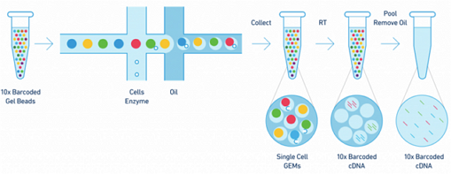
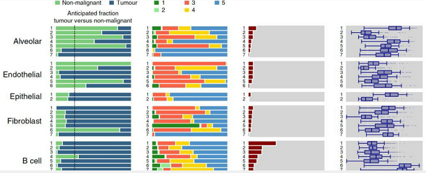
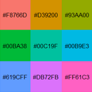
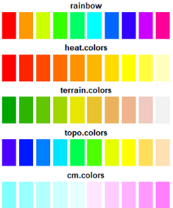
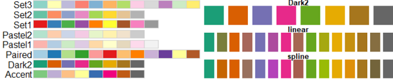
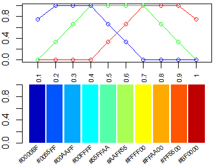

R 色彩 详解与实例
要点: R中的色彩很丰富，灵活运用才能提高图片的美感和区分度。本文前面是色彩理论和实例，后面是R中相关函数。
A programmer who subconsciously views himself as an artist will enjoy what he does and will do it better. —— Donald E. Knuth 1978
简书笔记:
论文figure色彩实例 - 权衡美观与区分度 |
[推荐]R语言中的渐变色 |
史上最全的图表色彩运用原理
色彩理论知识
SCI 图片用色的基本原则
sci图片的目标: 整洁干净、简洁漂亮。
- 同一篇文章的图片颜色要注意色调的整体性，不宜出现特别鲜明刺眼的颜色（尤其是荧光绿）
- 避免使用红绿，照顾色盲读者。可以使用红蓝代替。
- 同一张图片色系最好统一，看起来会更加协调。
- 同一个指标在全篇图片中最好都使用同一个颜色贯彻始终。
- 一般用红色表示上调，绿色/蓝色表示下调。
- 可以用渐变色来表示程度，颜色越深越多，颜色越浅越少，能够使数据显示更加直观。
以上，就是 SCI 图片用色上的一些小技巧。
Nature Genetics 2016年发表一篇关于包菜的研究文章，使用了很多颜色，怎么配色的？首先尽量避免扎眼的颜色，色彩的亮度要减少，以显得柔和，暖色系和冷色系要分开。是不是觉得很干净，很好看？
更复杂一些的，比如关于互补色、对比色的使用等颜色搭配相关的进阶知识，感兴趣的可以自行查看学习，对 SCI 图片或者是 PPT 的制作都是很有帮助的。
色彩概述
可以直接用色轮中的相邻色和互补色确定主色。
color palettes
color wheels
color schemes
color psychology
单色(hue相同，饱和度不同)Monochromatic schemes use different tones from the same angle on the color wheel (the same hue).
相似色 Analogous color schemes are created by using colors that are next to each other on the color wheel.
互补色(hue在色轮两端) Complementary schemes are created by combining colors from opposite sides of the color wheel.
三色系 Triadic schemes are made up of hues equally spaced around color wheel.
复合方案 Compound schemes are almost the same as complementary schemes.
Instead of using colors that are opposites, it uses colors on both sides of the opposite hue.
色彩列表
微软的四种颜色
Google的四种颜色
示意图色彩
10x单细胞示意图

碱基颜色 1 (10x)
A
T
G
C
Red
Purple
Orange
碱基颜色 2 (其他来源)
A
T
G
C
IGV:A
IGV:T
IGV:G
IGV:C
Cell cycle 1
G1
Cyclin D
S
Cyclin E
G2
Cyclin A
M
Cyclin B
Cell cycle 2
G1
Cyclin D
S
Cyclin E
G2
Cyclin A
M
Cyclin B
Inter
phase
条形图色彩
条形图

bar 色块提取1
#EE3523
#919135
#68CBDD
#F7921D
#029052
#902E8E
#323B97
#00B8F0
#EC188B
bar 色块提取2
item 01
item 02
item 03
item 04
item 05
item 06
item 07
色卡集合 (使用Canvas展示)
如果使用Chrome浏览器，可以按F12打开控制台Console, 鼠标单击颜色，控制台输出16进制(hex)颜色值; 双击则输出一整行unique color的hex值; 控制台带背景色的颜色字符可以复制粘贴。
小工具: 批量选取自己喜欢的颜色,
批量By色环 |
批量ByL |
批量ByS |
仿PS颜色设置 |
Color Palette 1: 生活中的色彩
Color Palette 2: CNS paper中单细胞可视化(tSNE/ UMAP/ heatmap/ boxplot) 经典配色
Color Palette 3: 财经杂志 商务图表 知名网站
Color Palette 4: HSL色彩模型
如何使用R语言画出漂亮的图，颜色很重要，既要协调，又要有一定的分辨力。
R原生的颜色请参考本站
R 颜色。
R中目测查看几种颜色的区分度:
scales::show_col( c('red','blue', '#FF9600', '#0096FF') )
barplot(rep(1,4), col=c('red','blue', '#FF9600', '#0096FF'), border = NA)
library(scales)
show_col(viridis_pal()(16), labels = FALSE)
show_col(hue_pal()(9), borders = NA) #效果见下图

彩虹色
#可以拿到任意多个颜色，当然颜色越多，分辨力越低。
barplot(rep(1,8), col=rainbow(8),border=NA, axes=F)
rainbow(8)
# [1] "#FF0000FF" "#FFBF00FF" "#80FF00FF" "#00FF40FF" "#00FFFFFF" "#0040FFFF"
# [7] "#8000FFFF" "#FF00BFFF"
barplot(rep(1,20), col=rainbow(20),border=NA, axes=F) #分辨力降低
其他几个预置渐变色

par(mfrow=c(5,1), mar=c(0,0,2,0))
n=10
barplot(rep(1,n), col= rainbow(n), border=NA,axes=F, main="rainbow") #彩虹色
#heat.colors()从红色渐变到黄色，再变到白色
barplot(rep(1,n), col= heat.colors(n), border=NA,axes=F, main="heat.colors")
#terrain.colors() 从绿色渐变到黄色，再到棕色，最后到白色
barplot(rep(1,n),col=terrain.colors(n), border=NA,axes=F, main="terrain.colors")
#topo.colors() 从蓝色渐变到青色，再到黄色，最后到棕色
barplot(rep(1,n),col=topo.colors(n), border=NA,axes=F, main="topo.colors")
#cm.colors() 从青色渐变到白色，再到粉红色
barplot(rep(1,n),col=cm.colors(n), border=NA,axes=F, main="cm.colors")
使用预置配色集合 Set2/Dark2，通过函数colorRampPalette()插值生成任意个渐变颜色。

library(RColorBrewer)
display.brewer.all() #显示全部颜色集合
## 选一个颜色集合，比如Dark2, Set2
csn='Dark2'
myColors=brewer.pal(8,csn) #该主题有n种颜色
par( mfrow=c(3,1), mar=c(0,1,1,0)) #bottom, left, top, right
barplot(rep(1,8),col= myColors, main=csn, axes=F,border=F)
# 插值，生成15个颜色
n=15
colorN=colorRampPalette(colors = myColors, interpolate ="linear")( n )
barplot(rep(1, n ),col= colorN, axes=F, border=F,
main="linear") #插值方式
colorN2=colorRampPalette(colors = myColors, interpolate ="spline")( n )
barplot(rep(1, n ),col= colorN2, axes=F, border=F,
main="spline") #插值方式
monocle 的pseudotime_heatmap的配色很显眼，十分值得借鉴。 本文只关心渐变色生成部分。
整个图的画法请参考: 伪时间平滑化热图 plot_pseudotime_heatmap (仿monocle)

############### color bar from monocle::plot_pseudotime_heatmap ##############
# 这个 color bar 来自于monocle，画热图效果很好
height = 1
n=22; mid=0.75;sill=0.25;base=1
table.ramp = function (n, mid = 0.5, sill = 0.5, base = 1, height = 1) {
x <- seq(0, 1, length.out = n) #0-1之间取n个值
y <- rep(0, length(x)) #等长度的0
### 定义极值 still
sill.min <- max( c(1, round( (n-1)*(mid-sill/2) ) + 1) ) #14
sill.max <- min( c(n, round( (n-1)*(mid+sill/2) ) + 1) ) #19
########## 替换0 平台期: 围绕mid的sill极值范围内的y取1
y[sill.min:sill.max] <- 1
y
### 定义 极值 base , 范围更宽
base.min <- round( (n-1)*(mid-base/2) ) + 1 #6
base.max <- round( (n-1)*(mid+base/2) ) + 1 #27
########## 替换1 上升部分
# xi是 still到base的min过渡态, yi则是等长的0-1之间的间距值
xi <- base.min:sill.min #[1] 6 7 8 9 10 11 12 13 14
yi <- seq(0, 1, length.out = length(xi))
# [1] 0.000 0.125 0.250 0.375 0.500 0.625 0.750 0.875 1.000
# 获取xi中大于0小于等于n的元素的下标
i <- which(xi > 0 & xi <= n) #[1] 1 2 3 4 5 6 7 8 9
y[xi[i]] <- yi[i] #让y在这些位置上[6,14]，值等于yi
y
########## 替换2 下降部分
# xi是 still到base的max过渡态, yi则是等长的1-0之间的间距值
xi <- sill.max:base.max # [1] 19 20 21 22 23 24 25 26 27
yi <- seq(1, 0, length.out = length(xi))
#[1] 1.000 0.875 0.750 0.625 0.500 0.375 0.250 0.125 0.000
i <- which(xi > 0 & xi <= n) #[1] 1 2 3 4
y[xi[i]] <- yi[i]
y
height * y
# [1] 0.000 0.000 0.000 0.000 0.000 0.000 0.125 0.250 0.375 0.500 0.625 0.750 0.875
# [14] 1.000 1.000 1.000 1.000 1.000 1.000 0.875 0.750 0.625
}
height=1
n=10
#do.call("table.ramp", as.list(c(n, c(0.8, 0.2, 1)))) #等价于
rr=table.ramp(n, 0.8,0.2,1); rr
#[1] 0.0000000 0.0000000 0.0000000 0.0000000 0.3333333 0.6666667 1.0000000
#[8] 1.0000000 1.0000000 0.7500000
gg=table.ramp(n, 0.5,0.4,1); gg
#[1] 0.0000000 0.3333333 0.6666667 1.0000000 1.0000000 1.0000000 1.0000000
#[8] 0.6666667 0.3333333 0.0000000
bb=table.ramp(n, 0.2,0.2,1); bb
#[1] 0.7500000 1.0000000 1.0000000 1.0000000 0.6666667 0.3333333 0.0000000
#[8] 0.0000000 0.0000000 0.0000000
par(mfrow=c(2,1), mar=c(2,2,0,1)) #b,l,t,r
plot(rr, xlim=c(0.5,n+0.5), ylim=c(0,1), type='o', col='red', xaxt='n')
axis(1, at=seq(1, n), labels=seq(1,n)/10, las=2,cex.axis=0.7)
lines(gg, col='green', type='o')
lines(bb, col='blue', type='o')
#
hmcols=rgb(rr, gg, bb)
hmcols
#[1] "#0000BF" "#0055FF" "#00AAFF" "#00FFFF" "#55FFAA" "#AAFF55" "#FFFF00"
#[8] "#FFAA00" "#FF5500" "#BF0000"
#color.rs=rainbow(60)
posX=barplot(rep(1,length(hmcols)), col=hmcols, border = NA, space=0.1)
text(posX, -0.05, labels=hmcols,
#col=hmcols,
xpd=TRUE, #允许绘制在绘图区外
cex=0.6, #字体是默认的倍数
adj=1, #adj=1右上对齐
srt=40) #倾斜30度)
coding ...
100 color combinations and how to apply them to your designs
Color Wheel: Want to know what colors look good together? Canva's Color Wheel makes color combinations easy.
Color Palette Generator
Color Palette Ideas
最佳多色(n>10)配色程序: https://medialab.github.io/iwanthue/
更多配色方案
1. 花瓣网（https://huaban.com/）搜索「色卡」，查找别人上传的各种配色方案的卡片。
很多色板Trending color palettes https://coolors.co/palettes/trending
2. Curated color palette inspiration. https://www.webdesignrankings.com/resources/lolcolors/
3. https://colorhunt.co/
4. https://vanschneider.com/colors
5. https://www.canva.com/learn/100-color-combinations/
6. https://color.adobe.com/zh/create/color-wheel
https://www.sessions.edu/color-calculator/
https://colorbrewer2.org/#type=sequential&scheme=BuGn&n=3
7. 如何创建和谐的颜色
https://www.sensationalcolor.com/creating-color-harmony/
8. D3 demo 用到的颜色 https://github.com/d3/d3/wiki/Gallery
9. 对图片的颜色进行聚类 http://www.cssdrive.com/imagepalette/
10.R中的颜色 https://qinqianshan.com/r_code/r_draw/colors-in-r/
http://color.biaozhiku.com/